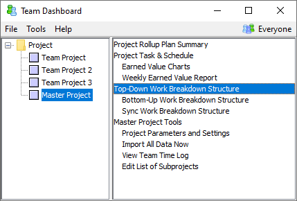

In any project of significant size, it is important for plans to be well-organized. If this is true for a team project, it is especially true for a master project.
Projects typically use a hierarchical work breakdown structure to describe groupings of related work. At the master project level, such a hierarchy should describe the major systems and subsystems that make up the master project. Special attention should be given to hierarchical systems and subsystems that are common across the team projects.
If there are certain project components and/or tasks that are common across the subprojects of a master project, you can define these tasks in the master project. Defining these common items can help earned value data and metrics data to roll up from subprojects to the master project in a more meaningful way. To define these common systems, subsystems, and tasks, follow the steps below:

This will open a Work Breakdown Structure Editor where you can enter and edit components that are common to all of the team projects in the master project. (For more information about editing this work breakdown structure, see the Editing the Work Breakdown Structure help topic.)